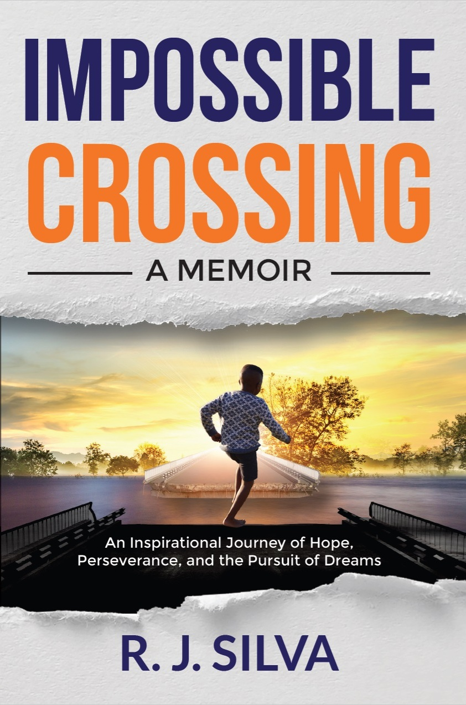

A Human Crossing Through Hardship, Belonging, Hope, and Purpose
Impossible Crossing is, above all, a book about people. It follows one life shaped by poverty, bullying, education, faith, love, and the quiet generosity of ordinary people whose presence changed a destiny without spectacle.
What gives the memoir its force is not just what happens, but the way the world is seen. The story chooses a generous gaze: it does not deny pain, injustice, ambiguity, or loss, yet it keeps returning to dignity, gratitude, and the good that people are still able to offer.
At its center, this is a book about believing — in people, in meaning, in hope, and in the possibility that even an impossible crossing can be crossed.
Nicole Neuman on Courage, Humanity, and Resonance
The foreword frames the memoir as something more lasting than a dramatic life story. It highlights a narrative marked by gratitude rather than resentment, intimacy rather than posture, and a rare trust in the reader’s intelligence.
It also helps explain why the book feels unusual: it refuses self-glorification, turns a personal story into a tribute to people and human decency, portrays Brazil with intimacy and dignity, and carries the kind of emotional resonance that tends to spread by recommendation rather than hype.
Readers, Messages, and Early Responses
This section will bring together selected reader responses over time: notes, screenshots, messages, photos with the book, and meaningful reactions from readers.
Placeholder for future testimonials and featured responses.
Passages, Context, and Deeper Reflections
Over time, this area will expand into a companion space for selected passages from the memoir — adding context, background, interpretation, and the stories behind specific moments in the book.
Placeholder for future story posts and commentary.
Places, Memories, and Visual History
This section will gradually gather photographs connected to the memoir: people, places, neighborhoods, schools, and later visits to important locations that shaped the story.
Placeholder for future photo galleries and image collections.